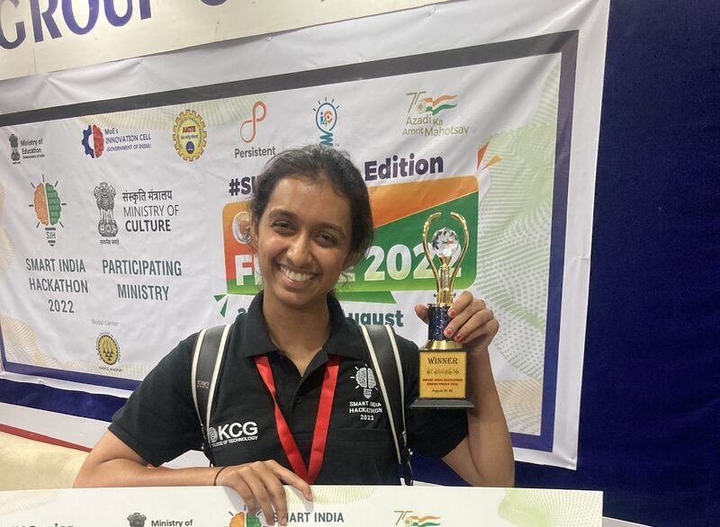

I build the sensing, data and 3D representations that let digital humans and immersive systems respond to people faithfully, from the subtle facial movements that make someone look alive to how we perceive the world through wearable devices such as Meta Project Aria Gen 2 glasses.
Three years of research at IIT Madras in a Dolby Laboratories collaboration, spanning headset capture, two human-subject studies, a published dataset with a best-paper honorable mention, and work under review on 3D face models.
I am an MS by Research student and Research Associate in Touch Lab, IIT Madras, advised by Prof. Manivannan Muniyandi.
Bharatanatyam's abhinaya and drawing caricatures made me attentive to how people express themselves. My research connects faithful digital humans with perception and interaction in immersive and wearable systems.
Seeking a PhD position starting Fall 2027. Thesis submission March 2027 · Convocation July 2027
Research experience at a glance
3+ years
Research at IIT Madras Since July 2023
2 human-subject studies
45-person corpus 36-person viewing study
1 published dataset
BlendME Best Paper Honorable Mention
Dolby Laboratories
Industry research collaboration One of five funded projects in India
4 research projects
Faces, immersive experiences and wearable perception
News
BlendME was published at the CVPR Workshop on Subtle Visual Computing and received Best Paper Honorable Mention.
Began my MS by Research at IIT Madras.
Joined Touch Lab as a Research Associate, working on headset facial sensing with Dolby Laboratories.
Research & Publications
Sensing, data and 3D representations connect my work on expressive digital humans, affective computing, immersive experiences and egocentric perception.
Published capture and avatar-replay demonstration.
PublishedCVPR 2026 Workshop on Subtle Visual Computing
Micro-expressions are brief and hidden by a headset. I built TRM candidate detection and avatar-replay annotation: 30 participants captured, 112 filtered clips from 21 people.
Illustrative model animation, not research results.
Preserving subtle to large facial expressions in 3D face models
Swethasree Sribabu · First author
Under review
Small expressive movements are what make a 3D face read as a specific person feeling something. I study how 3D face models represent expressions, from the subtlest to the largest.
Swethasree Sribabu · First author; system, data, model, study
Paper in preparation
Built a closed-loop system that runs entirely on a standalone headset: facial reactions are read on-device and used to choose the next film beat. Preprocessing and model inference take a median of 486 ms. Built the 45-person, 5,602-event spontaneous-expression corpus and a leave-one-subject-out recognition benchmark with leakage controls, and ran a 36-person study with Static, Adaptive and Yoked conditions that separates the adaptation a system requests from what viewers actually receive.
Illustration of multiple wearers. No captured data or method.
Multi-wearer audio-visual capture with Meta Project Aria Gen 2 glasses
Swethasree Sribabu · Co-lead, with a collaborator
In progress
Building a synchronized five-wearer capture setup with Meta Project Aria Gen 2 research glasses, recording multichannel spatial audio, egocentric video, eye and head tracking from every wearer at once, to measure what wearable sensors can recover about people and their surroundings that no single camera can.
Next, I want to carry subtle expressions all the way from capture to animatable digital humans.
Other collaborative work at Touch Lab: RGB-guided thermal super-resolution with 3D Gaussian Splatting; tactile-feedback emotion inducement; a 360-degree Aditya L1 VR walkthrough for SHAR/ISRO.
Before research
XR engineering gave me the foundation to build complete sensing and viewing systems. The research questions now drive what I build.
Monumental Katha
AR storytelling at the Shore Temple, Mahabalipuram. Team lead; 1st place, Smart India Hackathon 2022; continued with Ministry of Culture support.
VR digital twin of a crane
Team lead, VR digital twin project. 2nd prize, all-India IIT PALS InnoWAH! 2021-22.

Building with a team
President, XR Club, KCG, Feb 2021 to Apr 2023. Student council member and department representative, 2022.
Engineering experience: OmniSpatial Interactive, XR Developer Intern, 12 Jul to 31 Oct 2021; Imaginate, Software Development Intern, Aug to Oct 2022; XR Labs / Metarvrse Technologies, Junior Unity 3D Developer, 1 Mar to 20 Jun 2023; SpaceZee, VR Digital Twin Team Lead, 2021.
Honors & Talks
2026
Best Paper Honorable Mention, CVPR Workshop on Subtle Visual Computing, BlendME.
Current
Dolby University Research Collaboration India: one of five funded research projects nationwide.
2022
1st place nationally, Smart India Hackathon; team lead, Monumental Katha.
2021-22
2nd prize, all-India IIT PALS InnoWAH!, VR digital twin of a crane.
2-5 Mar 2021
2nd place, PALS NEXGEN 3D 96-hour hackathon.
2022
4th place of 35+ teams, GAVS-sponsored 24-hour hackathon.
2021
Finalist, Technology Infusion Grand Challenge Australia, YOUWESAFE.
2023
Best Outgoing Student, CSE department, KCG College of Technology.
2023
Best Final Year Project, touchless game using computer vision and AR.